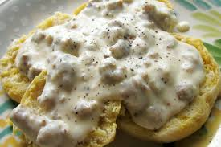

image source: Sausage Gravy Biscuits
This biscuits and gravy recipe uses jumbo buttermilk biscuits and pork sausage crumbles
for a hearty, family-favorite breakfast that's ready in just 15 minutes.
Ingridients and recipes sources: allrecipes